블루밴드를 어떻게 하면 신선하고 믿음직스러운 마가린으로 보여줄 수 있을까?
How might we make Blue Band feel like a fresh, trustworthy margarine?
블루밴드는 좋은 재료와 부드러운 발림성을 가진 마가린 브랜드입니다. AI로 SNS용 비주얼을 제작하며, 브랜드의 파란색은 더 묵직하고 믿음직스럽게, 대비되는 옅은 노란색은 부드럽고 발림성 좋은 톤으로 풀어내 두 색이 자연스럽게 어우러지도록 했습니다. 다양한 형태의 투명한 그릇을 활용해 건강한 재료를 여러 방식으로 즐길 수 있다는 인상을 전달했습니다.
Blue Band is a margarine brand built on good ingredients and soft spreadability. I created AI-generated visuals for social media, rendering the brand's blue tone heavier and more trustworthy, while a contrasting pale yellow carried a soft, spreadable feel, blending the two together naturally. Various transparent bowl shapes suggested these healthy ingredients could be enjoyed in many different ways.
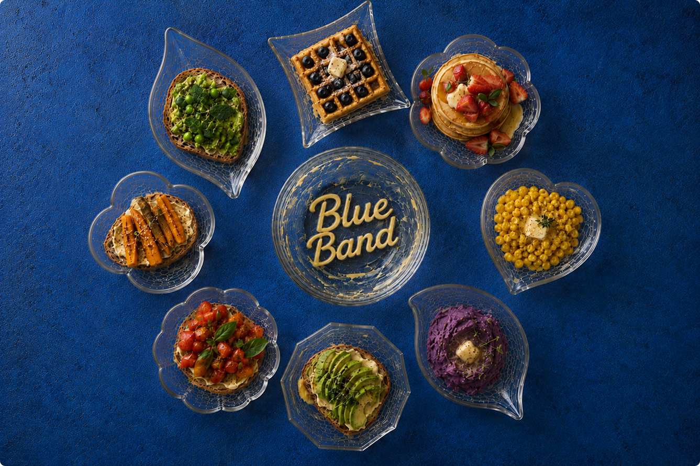
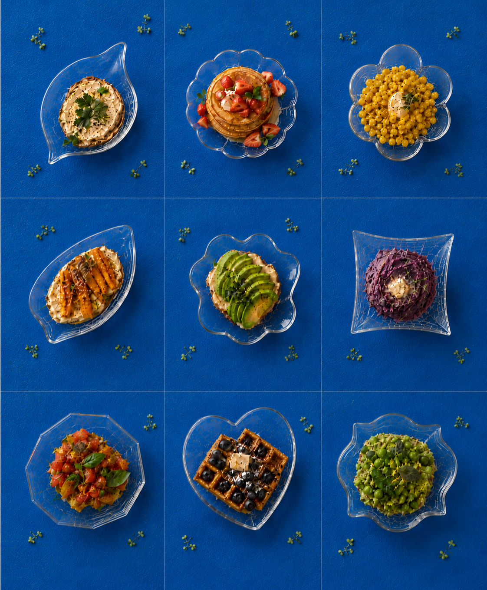
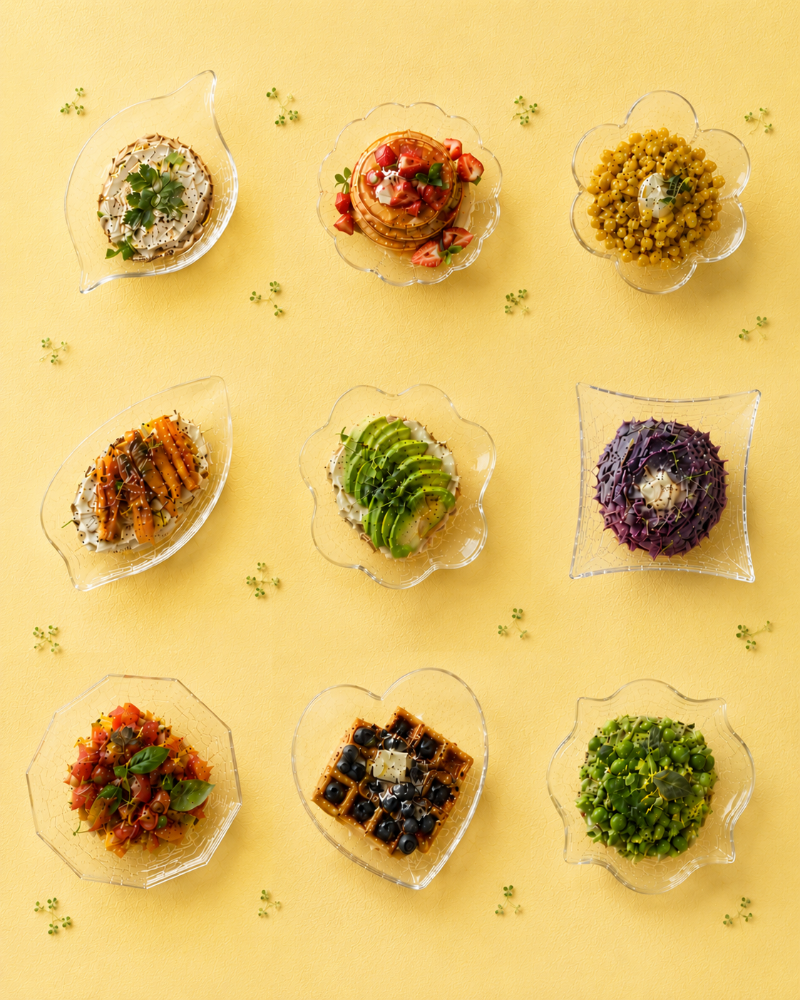
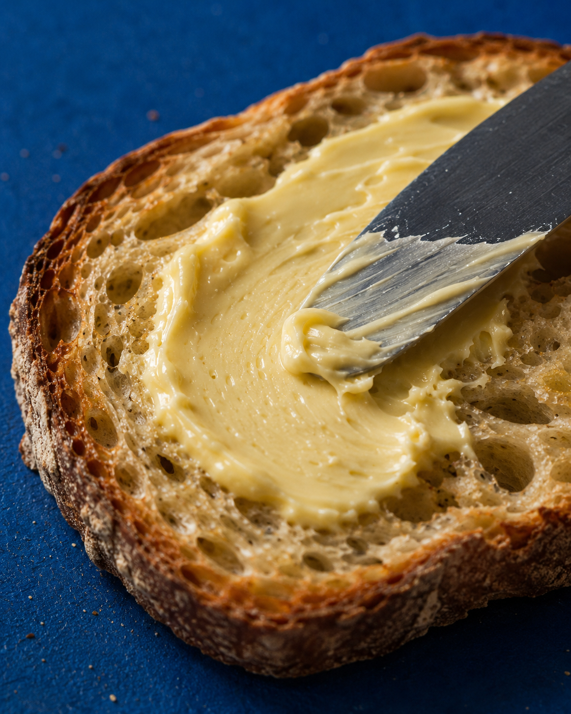
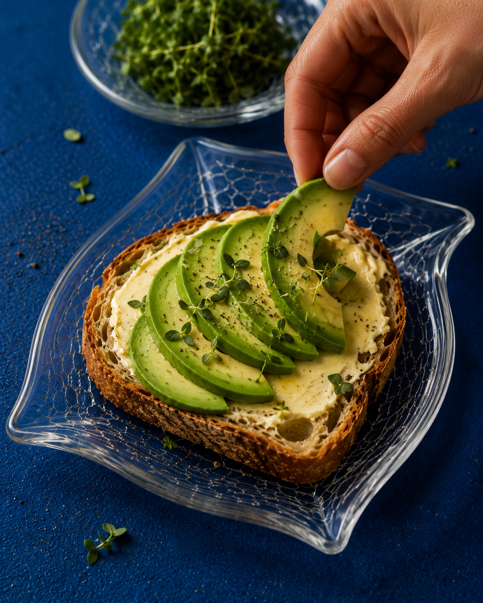
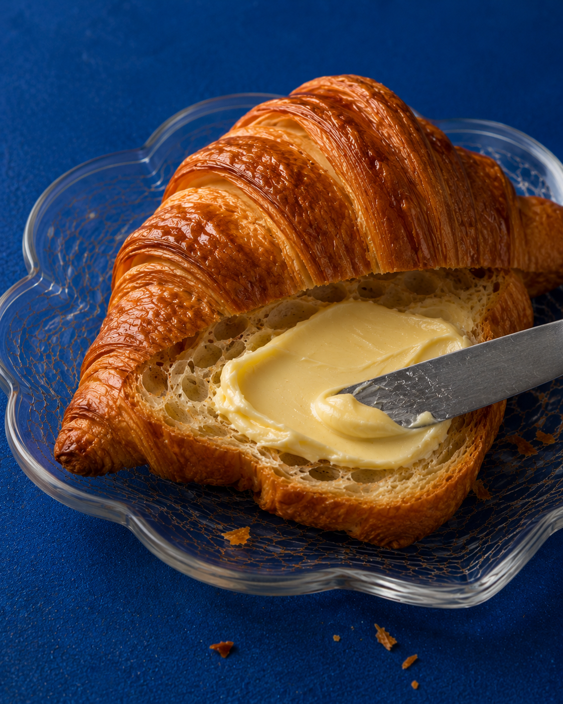
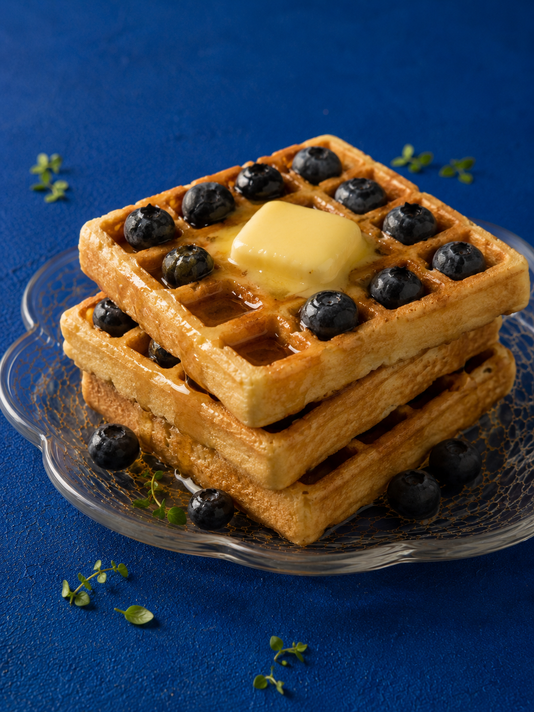
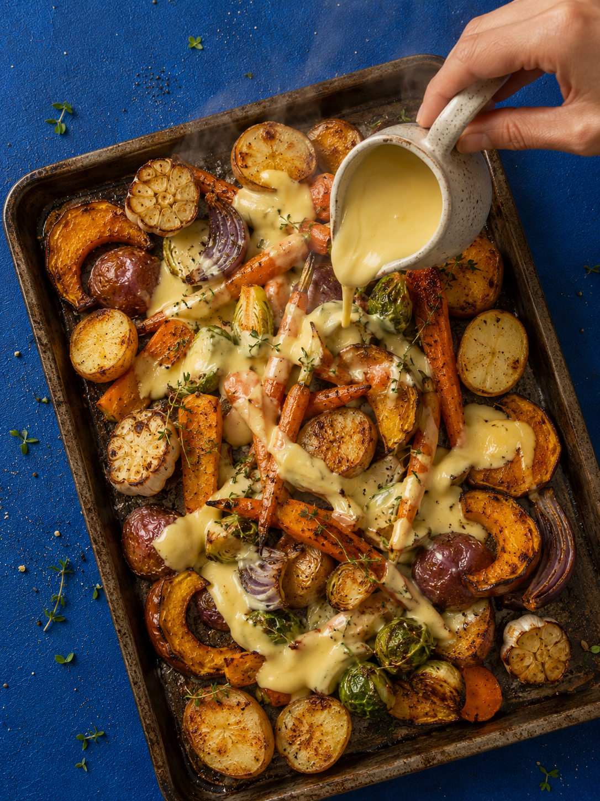
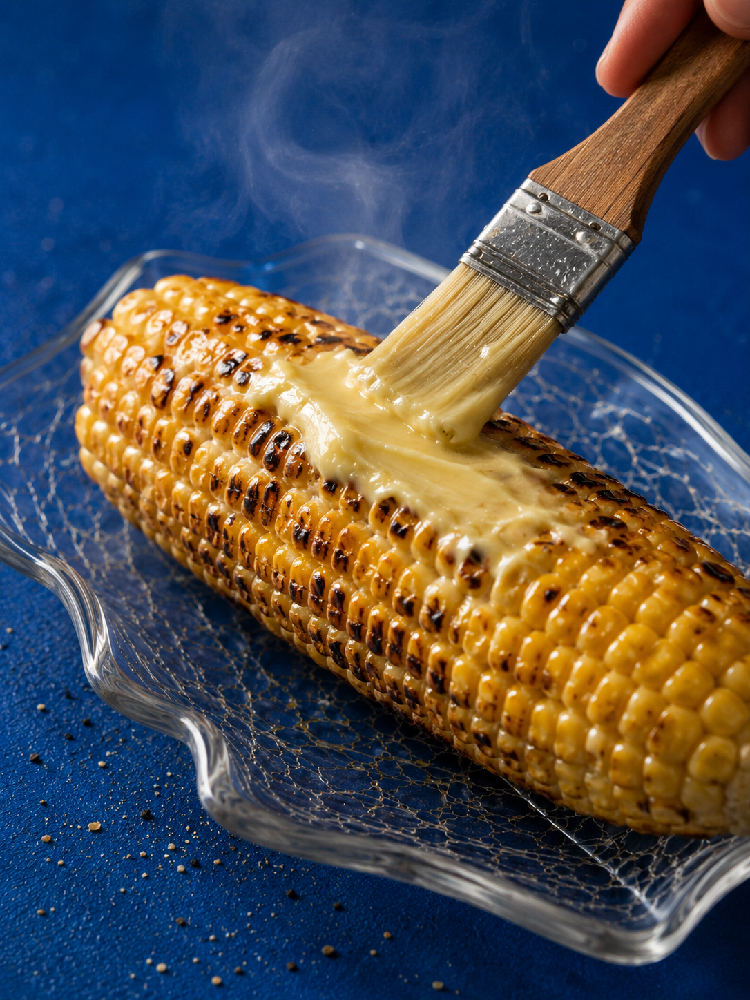
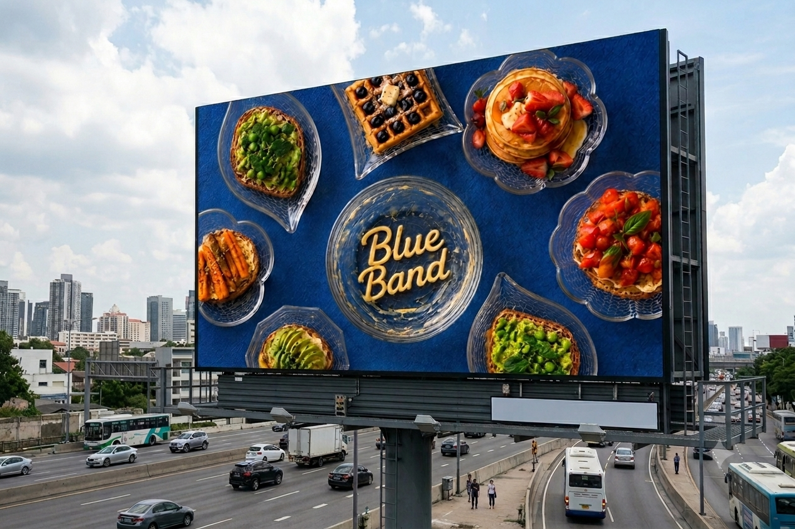
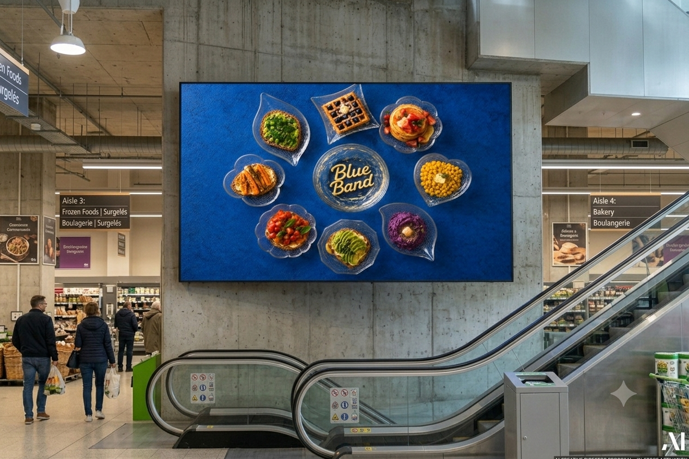
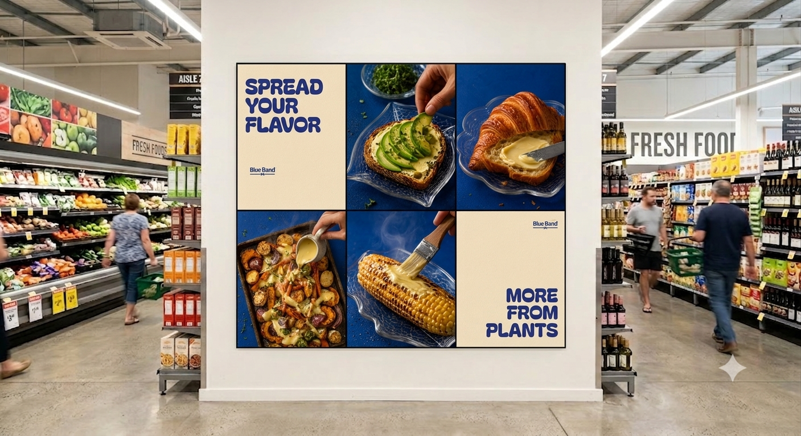